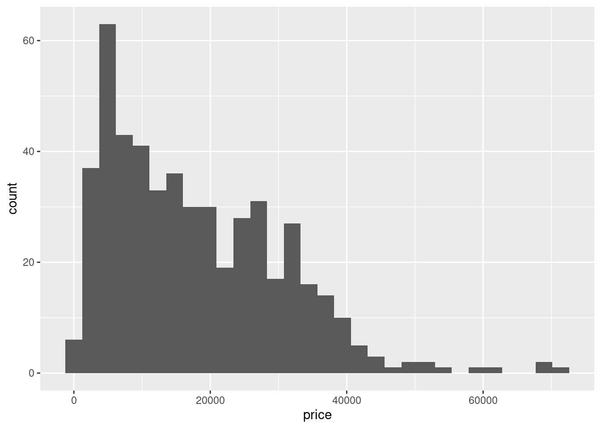
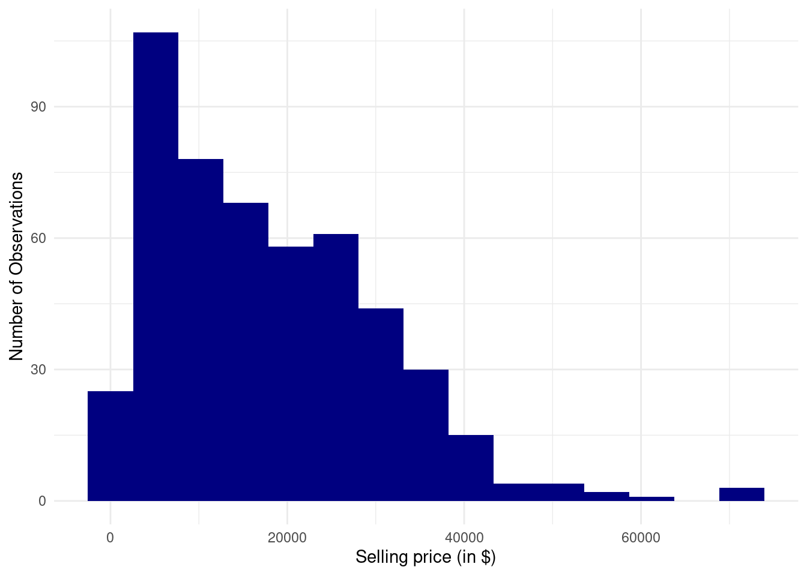
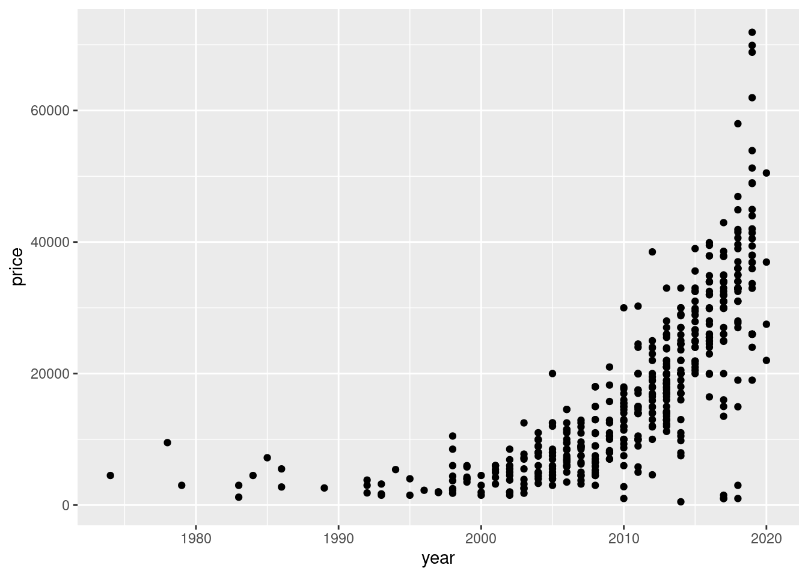
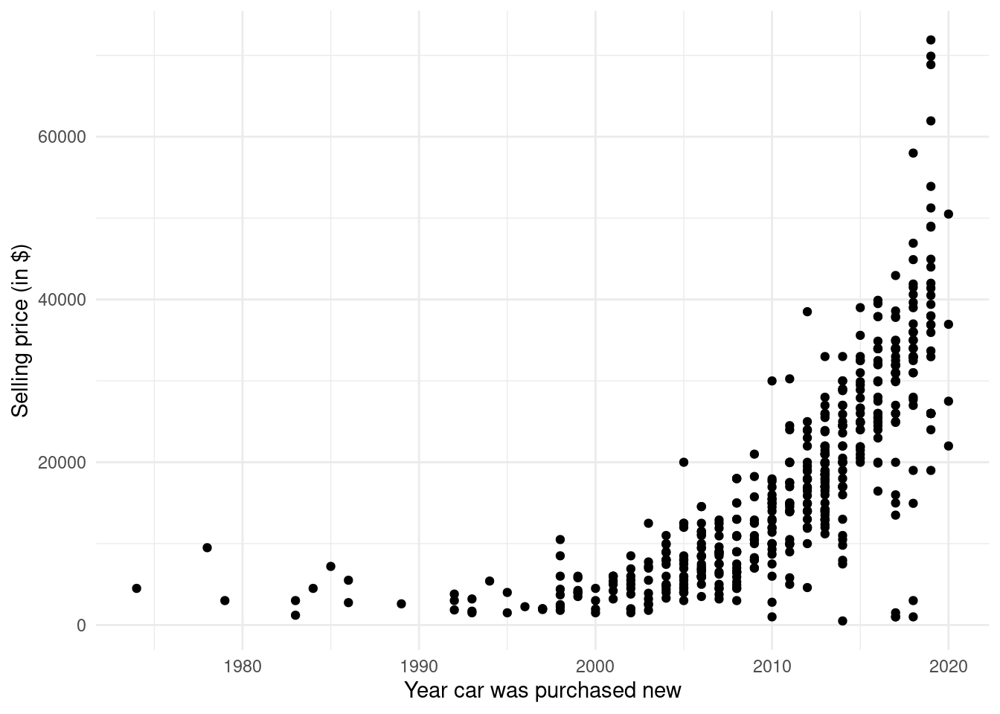
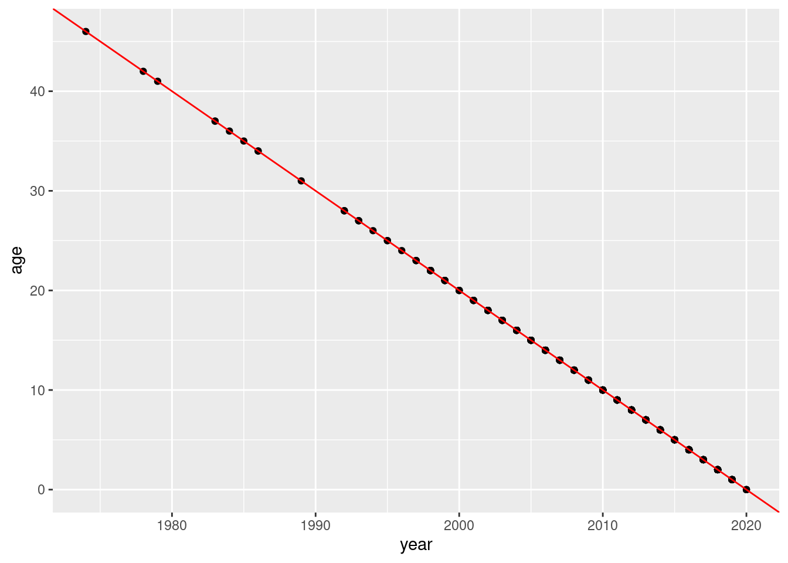

df <- read.csv("f150.csv")Tutorial 1
Introduction
In this tutorial we will explore the f150.csv dataset, which featured in the Resit exam in January 2021. The dataset contains information from advertisements for second-hand Ford F-150 trucks on Craigslist, a US website similar to https://www.marktplaats.nl here in the Netherlands. The data contain the asking price, the year of manufacture, the mileage (odometer reading), the truck’s color and an indicator for whether truck is in good condition or not.
This is how the dataset was introduced in the exam on Testvision: 
Exercises
- Open the f150.csv data file and inspect the data.
- Create a histogram of the variable
priceand comment. - Obtain descriptive statistics (mean/min/max/SD) of the variable
price. - Create a scatter plot of
yearagainstprice, withyearon the horizontal axis andpriceon the vertical axis. Interpret it. - Compute the covariance and correlation between
yearandprice. Interpret them. - Create the variable
agefrom the variableyear. Keep in mind that the advertisements were shown in 2020. - Compute the covariance and correlation between
ageandprice. Relate this to what you found in Q5. - Study the relationship between
ageandyear. Create a scatter plot and compute the covariance and correlation. Interpret them.
Extra Questions from the Actual Exam
Below are questions 1 and 2 from the 2021 resit exam. In the first question you were asked to type the correlation coefficient into the box:

The second question was a multiple choice question:

Solutions
Exercise 1
We read in the data using the read.csv() function:
For this to work, RStudio needs to be in the same directory as the file. To ensure this I recommend using the RStudio Projects method. First put the f150.csv file into a particular folder on your computer and then create a “Project” within RStudio for that folder. To do this perform these steps: File \rightarrow New Project \rightarrow Existing Directory \rightarrow Browse \rightarrow Choose the folder containing the f150.csv data and press “Open” \rightarrow Create Project). The CSV file should then be visuble in the “Files” tab in RStudio. You can see the steps in greater detail here.
After reading in the data you should see df in the Environment tab. There should be 500 observations with 5 variables.
Exercise 2
We can create a histogram of the variable price using the ggplot() function from the package ggplot2. You might have to install the package ggplot2 using the command install.packages("ggplot2") if you do not have it installed already.
We can create the plot with the following code:
library(ggplot2)
ggplot(df, aes(price)) + geom_histogram()`stat_bin()` using `bins = 30`. Pick better value with `binwidth`.
Here is one way of customizing the plot:
ggplot(df, aes(price)) +
geom_histogram(bins = 15, fill = "navy") +
xlab("Selling price (in $)") +
ylab("Number of Observations") +
theme_minimal()
We can see that most F150s are on sale for less than $40,000 but there are a small number selling for more, up to about $70,000.
Exercise 3
We can get descriptive statistics for a variable using summary():
summary(df$price) Min. 1st Qu. Median Mean 3rd Qu. Max.
499 7484 15000 17855 25990 71900 This gives the minimum ($499), the maximum ($71,900), the median ($15,000), the average ($17,855) and the 25th and 75th percentile ($7,484 and $25,990 respectively). The summary() function does not give the standard deviation. To get this we need to calculate it separately:
sd(df$price)[1] 12575.61To calculate the individual parts given by summary() we can do:
min(df$price)[1] 499max(df$price)[1] 71900median(df$price)[1] 15000mean(df$price)[1] 17854.54quantile(df$price, 0.25) 25%
7483.75 quantile(df$price, 0.75) 75%
25990 Exercise 4
To create a scatter plot we can use a geom_point() layer with ggplot():
ggplot(df, aes(year, price)) + geom_point()
We can customize it as follows:
ggplot(df, aes(year, price)) +
geom_point() +
xlab("Year car was purchased new") +
ylab("Selling price (in $)") +
theme_minimal()
We can see that older cars (cars bought new before the year 2000) sell for less and newer cars sell for more. There is a positive relationship between year and price.
Exercise 5
The covariance between year and price is:
cov(df$year, df$price)[1] 65380.19This is positive, indicating a positive linear relationship between year and price. However, it is difficult to determine whether this is a strong relationship or not. This is easier to see with the correlation:
cor(df$year, df$price)[1] 0.7203128The correlation is 0.720. The correlation is always between -1 and +1. Numbers closer to 1 indicate a strong positive linear relationship. A number like 0.72 indicates that there is a strong linear relationship.
Exercise 6
In the question description we are told that the advertisements were collected in 2020. So if the year is 2020 the car is new or almost new and the age is 0. If the year is 2019 then the car is 1 year old. If the year is 2018 then the car is 2 years old, and so on. We can create the age of the car using:
df$age <- 2020 - df$yearLet’s take a look at the age by year to check if this gives the expected output. We can do this using the aggregate() function:
aggregate(age ~ year, FUN = mean, data = df) year age
1 1974 46
2 1978 42
3 1979 41
4 1983 37
5 1984 36
6 1985 35
7 1986 34
8 1989 31
9 1992 28
10 1993 27
11 1994 26
12 1995 25
13 1996 24
14 1997 23
15 1998 22
16 1999 21
17 2000 20
18 2001 19
19 2002 18
20 2003 17
21 2004 16
22 2005 15
23 2006 14
24 2007 13
25 2008 12
26 2009 11
27 2010 10
28 2011 9
29 2012 8
30 2013 7
31 2014 6
32 2015 5
33 2016 4
34 2017 3
35 2018 2
36 2019 1
37 2020 0We can see that the age is correct for each year.
Why did we use FUN = mean here? We have to provide a function to aggregate(). The value of age is always the same for any given value of year. For example, let’s look at year 2000:
df[df$year == 2000, ] price year odometer paint_color good_condition age
146 3000 2000 133000 red 0 20
398 1500 2000 209000 red 0 20
426 1950 2000 236541 brown 0 20
457 4500 2000 223000 white 0 20The age is always 20. So we can just take any value of age within a year using the aggregate function. The mean will be the same as all the values so this function works, i.e. the mean of c(20, 20, 20, 20) is 20. You could also use min, max, or median, all will give the same result. Try this out yourself.
Question 7
We calculate the covariance and correlation between age and price:
cov(df$age, df$price)[1] -65380.19cor(df$age, df$price)[1] -0.7203128These indicate a strong negative linear relationship between age and price. This makes sense because older cars should be worth less on the resale market.
We see that the magnitudes of the numbers are the same as Question 5 but with a minus sign in front. This should be no surprise because age and year effectively contain the same information: age is the negative of year plus a constant term 2020. Adding a constant term to a variable does not affect the covariance or correlation, but the negative flips the sign of the covariance and correlation.
Question 8
We now get the covariance and correlation between age and year:
cov(df$age, df$year)[1] -52.09451cor(df$age, df$year)[1] -1ggplot(df, aes(year, age)) +
geom_point() +
geom_abline(intercept = 2020, slope = -1, color = "red")
All the covariance tells us is that the two variables are negatively related, but the correlation term tells us the two variables are perfectly negatively linearly related. This makes sense because one is the negative of the other plus a constant term. It’s possible to write age as a linear function of year for every observation (age_i=2020-year_i). The scatter plot also shows that all points lie in a straight line according to age_i=2020-year_i.
Exam Question 1
This question was fairly straightforward. All that was required was to read in the dataset and compute the correlation:
df <- read.csv("f150.csv")
cor(df$price, df$odometer)[1] -0.7232991You then had to copy the number -0.7232991 and paste it into the answer box. The question accepted any answer between -0.724 and -0.723 so if you rounded the answer to 4 digits after the decimal point it would also be correct.
No interpretation was required in the question. But if there was we should say that the selling price and mileage are negatively linearly related: trucks that have driven more miles usually sell for less.
Exam Question 2
This question first required you to do the calculation we did in Q5 above:
df <- read.csv("f150.csv")
cor(df$price, df$year)[1] 0.7203128However, the options to choose from all talk about price and age. You had to realize from the note in the question and from the exam introduction that age and year were negatively related, and that this would flip the correlation:
df$age <- 2020 - df$year
cor(df$price, df$age)[1] -0.7203128So the correct response is that there is a negative linear relationship between the age of an F-150 and its price.